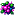

Sobrevive antes de improvisar.
Aquí está lo que necesitas para mantenerte en la partida: muerte permanente, economía, HUD, movilidad y servicios del Evento.
Reglas del Evento

Muerte Permanente
Al morir pasarás a Espectador y no podrás continuar hasta ser revivido. Tu inventario se conserva, pero tu equipo queda fuera de la partida mientras sigas muerto.

Economía
Los enemigos derrotados entregan ScuadCoins. Llévalas a las tiendas para comprar suministros o deposítalas en el Banco para tener una reserva segura.
Dimensiones por Fase
El Nether, el End y la Dimensión Doom no están disponibles desde el inicio. Cada acceso se abre cuando el Evento alcanza su fase correspondiente.

Protección del Evento
Las coordenadas y la regeneración natural están activas. Los mobs no pueden destruir o alterar tus construcciones mediante griefing.
Cómo leer el HUD
Banco y temporizador
En la esquina superior izquierda se muestra tu Banco. Cuando existe un desafío, bendición, cacería u otro evento temporizado, el HUD se amplía únicamente lo necesario para mostrar el tiempo restante.
Más Buscado
Durante una Cacería PvP puede aparecer un jugador marcado. Su nombre se muestra junto al icono de Más Buscado; derrotarlo entrega 500 ScuadCoins y convierte al asesino en el nuevo objetivo. Si el objetivo actual sobrevive hasta el final, se lleva 500 ScuadCoins.
Estela de rareza
Algunos objetos especiales dejan una estela de color en su slot. La Baya sobrecargada usa una estela violeta y la Esquirla del Ocaso una estela cian. También puedes personalizar tus propias armas desde la Forja de Estelas.
Homes y Baya sobrecargada
/scuad:home. Cada jugador puede registrar hasta 12 Homes con nombre propio, dimensión y coordenadas exactas, y elegir si cada uno será privado o público.
Baya sobrecargada
Comida especial de teletransporte. Tras 10 segundos de consumo abre una interfaz con tus Homes y los Homes públicos disponibles. Al seleccionar uno, te lleva a esa dimensión y ubicación.
/scuad:home
Abre el menú de Homes para guardar la posición en la que estás, asignarle el nombre que quieras, decidir si es pública o privada y administrar ubicaciones anteriores.
Privados y públicos
Los Homes privados solo aparecen para su propietario. Los Homes públicos pueden aparecer en el selector de Baya de otros jugadores, permitiendo crear puntos comunitarios sin exponer tus bases privadas.
Estructuras Interactivas
Banco Central
Deposita todas las ScuadCoins que lleves encima o retira únicamente la cantidad que necesites. Lo depositado permanece guardado aunque mueras.
Tienda de Comida
Provisiones para mantenerte con vida. Su catálogo crece conforme avanza el evento por sus fases.

Tienda de Pociones
Compra pociones de emergencia y alquimia avanzada. Las opciones más poderosas se desbloquean con las fases.
Urna de Oro
Intercambia riqueza por recursos especiales: Almas de Jugador, tótems, Perlas de Ender y experiencia.
Fosa de Almas
Usa 1 Alma de Jugador para devolver a un compañero desde Espectador. El jugador revivido aparecerá junto a la fosa.
Sistemas recientes del Evento
Banco directo en tiendas
Al comprar, primero se usan las ScuadCoins que llevas contigo y el Banco completa automáticamente lo que falte. No necesitas retirar dinero antes de comprar.
Mercado de minerales
Desde Fase 2, el Banco permite comprar y vender minerales en lotes de 16. Las ventas se depositan directamente en tu saldo.
Aviso de jefe
Cuando una aparición probabilística va a ocurrir, el Evento avisa con 5 minutos de preparación. Puedes moverte a una arena más cómoda antes de que aparezca.
Ciclo PvP
Después de 12 ruletas normales comienza un periodo de 2 horas de PvP. El HUD indica claramente si PvP está activo o desactivado.
Comandos útiles para jugadores
/scuad:home
Guarda, nombra y administra tus Homes privados o públicos. La Baya sobrecargada usa estas ubicaciones como destinos.
/scuad:spectate
Si estás muerto y en Espectador, abre una lista de jugadores vivos para seguir su aventura mientras esperas una resurrección.
/scuad:doom
Abre el menú para entrar o salir de la Dimensión Doom cuando el evento haya alcanzado la Fase 2.
/leaderboard
Abre la clasificación del Evento en cuatro categorías: más dinero, más jugadores eliminados, más jefes derrotados y más muertes.
/scuad:revive
Abre la interfaz de resurrección cuando las reglas de la fase permitan devolver a un compañero a la partida.